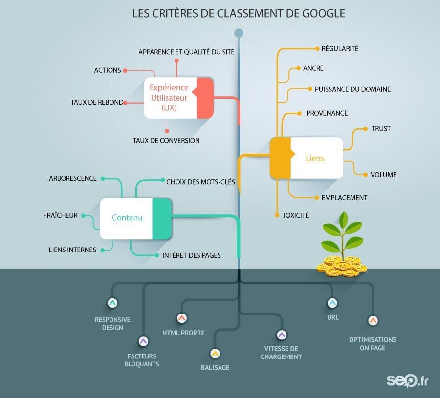
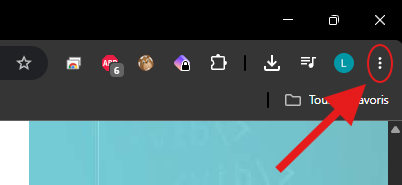
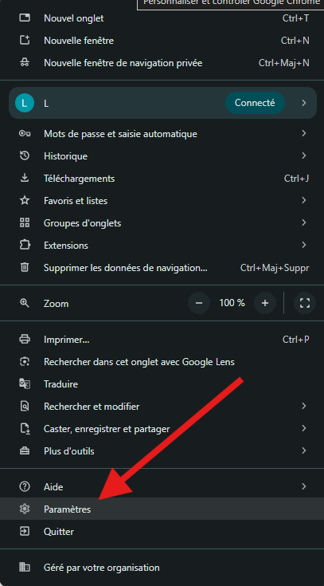
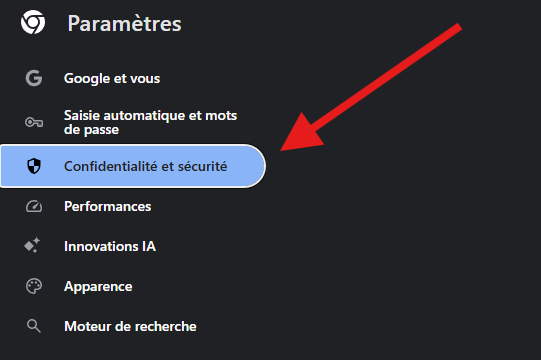
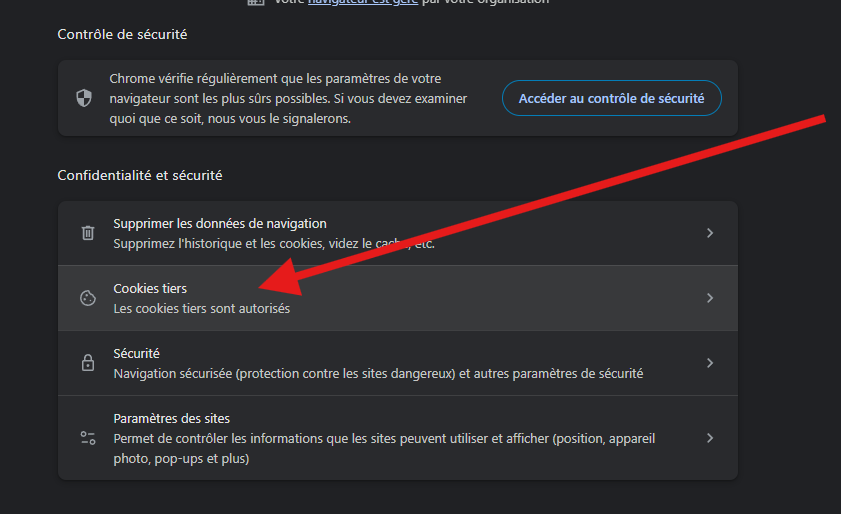
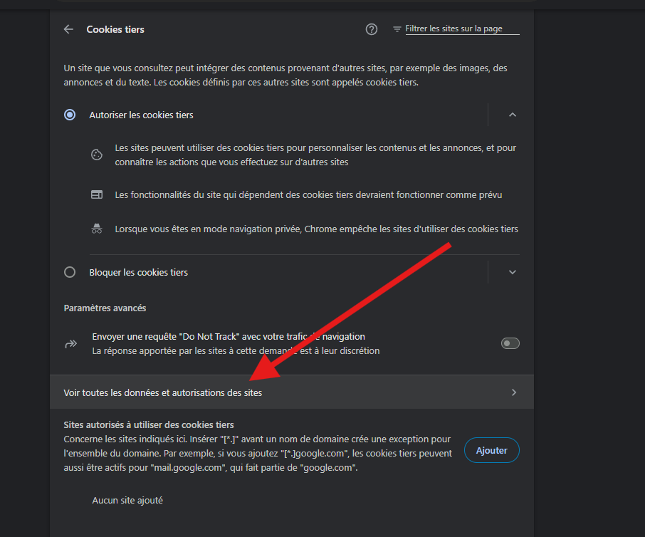
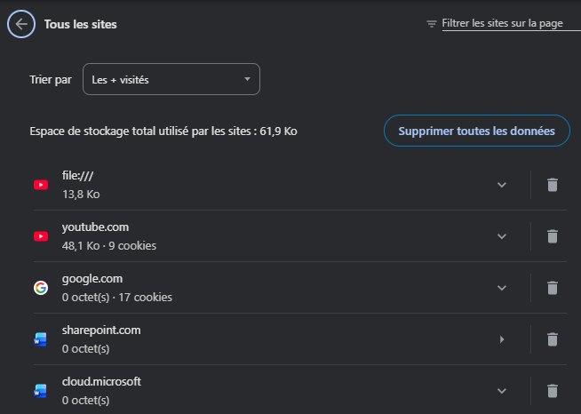

Les moteurs de recherches
Un moteur de recherche est une application web qui permet d'accéder à des ressources (pages web, images, fichiers,...). La recherche se fait généralement en utilisant des mots-clés. Les moteurs de recherche explorent le web à l'aide de programmes appellés robots qui ont pour rôle d'indexer des pages web. A partir de cette récolte d'informations, le moteur de recherche classifie ses pages dans un certain ordre à l'aide d'algorithmes. Suivant les mots clés tapés, le moteur de recherches affichera le lien de tel ou tel page dans un ordre croissant des liens qui lui semble les plus pertinents au vu de la recherche effectuée.
1. Identifier les quatres premiers résultats correspondant à la recherche des mots clés « streaming musique » avec les différents moteurs de recherche suivants : https://www.google.fr https://www.qwant.com https://www.bing.com https://duckduckgo.com 2. Conclure quant à l’ordre des résultats affichés. 3. Regarder la video sur la notion de pagerank disponible ci-dessous : (vous pouvez activer les sous-titres) Le SEO, de l’anglais Search Engine Optimization, est un terme anglais qui définit des méthodes d’optimisation pour les moteurs de recherche. Il existe bien sur bien d’autres algorithmes que le « pageRank » pour classer des pages :

4. Rappeller en quelques lignes le fonctionnement d'un moteur de recherche.Les cookies
1. Lire la video ci-dessous et rappeller en quelques lignes le rôle d'un cookie. 2. Nous allons observer quelques cookies. En premier lieu, ouvrir Firefox et naviguer sur quelques site web. Notamment des sites journalistique ou des boutique en ligne. Autoriser les cookies sur ces sites. Pour observer les cookies sur Google Chrome, aller sur l'icône en haut à droite du navigateur (entourée en rouge).

Cliquer dessus et cliquer sur Paramètres.
Cliquer ensuite sur Confidentialité et sécurité.
Cliquer sur Cookies tiers.
Cliquer sur Voir toutes les données et autorisations des sites.
Vous pouvez obeserver les différents cookies lié à votre navigation.
Vous pouvez à partir de la page précédente configurer différents paramètres de sécurité, supprimer vos cookies, votre historique, etc.Lire la video 1. Donner trois exemples d'utilisations de cookies. 2. Qu'est ce qu'un cookie tiers ? 3. Quels sont les aspects négatifs de l'utilisation de cookies ?
Vie privée et naviagtion web
Lire l'essentiel de l'article Wikipédia en cliquant ici.
Lire l'article de la CNIL en cliquant ici.
Répondre aux questions suivantes :
1) Qu'est-ce que l'hanneçonnage ? Quels sont les éléments nous permettent de soupsonner une tentative malvaillante de "piratage" ? 2) Quelles sont les différences entre la navigation "classsique" et la navigation privée ?